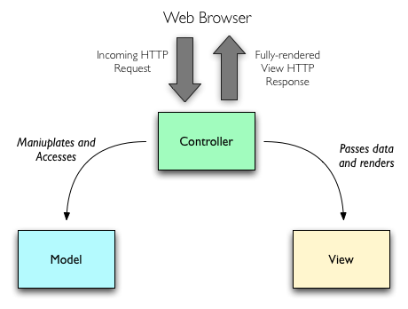
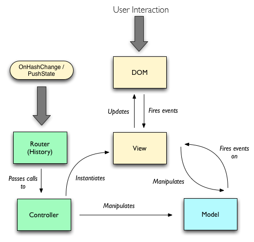
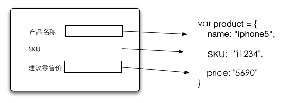

开始使用Angularjs
什么是Angularjs
Angularjs是一个扩展了浏览器功能的js框架
数据绑定
MVC
M: Javascript 对象
V: HTML
C: Js 函数
MyCtrl = function($scope) { $scope.yourName = "Ting"; }
DSL
定义自己的HTML标签
show
不正确的格式
PHP MVC vs js MVC
PHP MVC
Controller为中心
Request和Response作为和用户交互的途径

picture from http://blog.nodejitsu.com/scaling-isomorphic-javascript-code
PHP MVC vs js MVC
js MVC
View 为中心
不需要Request和Response, 都在浏览器中完成

picture from http://blog.nodejitsu.com/scaling-isomorphic-javascript-code
数据绑定
双向数据绑定
js对象和DOM元素直接双向绑定

例子
sample
controller 和 $scope
介绍controller
angularjs里controller就是一个普通的js函数 + 一个scope + 注入的服务，变量 在angularjs里controller是用来为何一个scope的。维护的工作包括在这个scope里定义变量，定义方法。
// $scope定义了controller对外暴露什么变量/方法 // product 通过DI吧一些依赖注入到方法里 var ProductCtrl = function($scope, product) { $scope.product = product; $scope.sayHello = function() { console.log('hello'); } }
ng-controller directive
{{product.name}}
问好
view 和 模板
在angularjs里， 模板就是纯HTML外带directives。（directive就是对HTML的扩展）
expression
name
{{product.name}}
price
{{product.price}}
iteration
name
{{person.name}}
price
{{person.price}}
if
nokia
iphone
介绍module
组合一组功能
创建module时依赖关系是module级别的
var jsSrcApp = angular.module('jsSrcApp', ['ngResource'])
angularjs自带模块
ng
ngResource
ngMock
ngCookies
ngMockE2E
ngSanitize
介绍和后台的通信
介绍directive DSL 用， 写
介绍DI
Fazit
Backbonejs is
Small 4.6kb
Simple
Flexible, can work with JQuery or any other Js Framework
Good community, a lot of tutorial, books and plugins
Question?
Thanks
←
→
/
Go to slide:
#